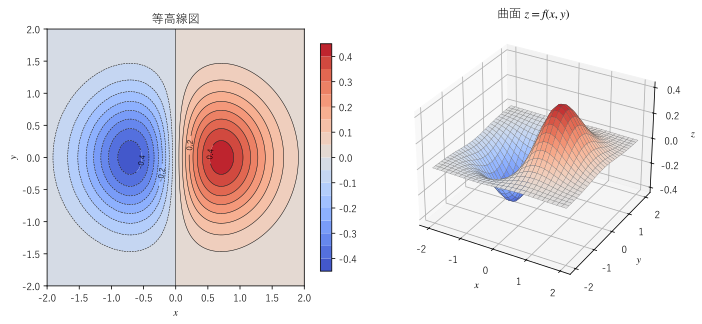
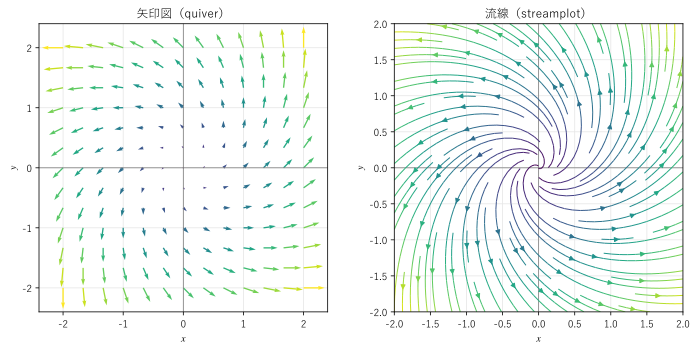

第 4 章 スカラー場とベクトル場
この章では、本書の主題である「場」を導入し、図で表す方法を説明する。続いて、場の変化を調べる基本の道具である偏微分、全微分、連鎖律を学ぶ。最後に、ベクトル場に沿って進む曲線である流線を扱う。第 II 部の勾配・発散・回転は、すべてこの章の偏微分の組み合わせとして定義される。
場とは何か
空間の各点 \((x, y, z)\) に 1 つの実数 \(f(x, y, z)\) が決まっているとき、\(f\) をスカラー場という。温度の分布、地形の標高、圧力の分布、電位などがその例である。位置ベクトル \(\bm{r} = (x, y, z)\) を使って \(f(\bm{r})\) とも書く。数学的には、3 変数（平面なら 2 変数）の実数値関数のことである。
空間の各点に 1 つのベクトル \(\bm{F}(x, y, z)\) が決まっているとき、\(\bm{F}\) をベクトル場という。風や水の流れの速度、電場、磁場、重力などがその例である。成分で書くと
であり、ベクトル場は 3 つのスカラー場の組とみなせる。
場は時刻 \(t\) によって変わることもある。たとえば、朝と昼では部屋の温度の分布が違う。このときは \(f(x, y, z, t)\) のように時刻も変数に含める。時刻によらない場を定常な場という。本書では、特に断らない限り定常な場を扱う。
場の例をいくつか挙げる。
場 |
式の例 |
種類 |
|---|---|---|
原点からの距離 |
\(f(\bm{r}) = r = \sqrt{x^2 + y^2 + z^2}\) |
スカラー場 |
点電荷の電位 |
\(V(\bm{r}) = \dfrac{q}{4 \pi \varepsilon_0 r}\) |
スカラー場 |
原点から放射状に広がる場 |
\(\bm{F}(\bm{r}) = \bm{r} = (x, y, z)\) |
ベクトル場 |
\(z\) 軸のまわりの回転 |
\(\bm{F}(\bm{r}) = (-y, \ x, \ 0)\) |
ベクトル場 |
一様な重力 |
\(\bm{F}(\bm{r}) = (0, \ 0, \ -mg)\) |
ベクトル場 |
スカラー場を図で表す
2 変数のスカラー場 \(f(x, y)\) は、2 通りの方法で図にできる。1 つは、高さ \(z = f(x, y)\) の曲面（関数のグラフ）として 3 次元で描く方法である。もう 1 つは、\(f\) の値が等しい点を結んだ曲線 \(f(x, y) = c\) を、いくつかの \(c\) について平面に描く方法である。この曲線を等高線という。地図の等高線や天気図の等圧線と同じものである。
図 5 は、スカラー場 \(f(x, y) = x e^{-(x^2 + y^2)}\) を 2 つの方法で描いたものである。右の曲面では山と谷の形がつかみやすく、左の等高線図では値を正確に読み取りやすい。


図 5 スカラー場 \(f(x, y) = x e^{-(x^2 + y^2)}\) の等高線図と曲面
19def create_figure() -> Figure:
20 """左に等高線図、右にグラフの曲面 z = f(x, y) を描く."""
21 fig = plt.figure(figsize=(10.0, 4.4))
22
23 ax1 = fig.add_subplot(121)
24 xx, yy = vc_plot.mesh((-2.0, 2.0), (-2.0, 2.0), 200)
25 levels = np.linspace(-0.45, 0.45, 19) # f の値は -0.43 から 0.43 の範囲にある
26 filled = ax1.contourf(xx, yy, field(xx, yy), levels=levels, cmap="coolwarm")
27 lines = ax1.contour(xx, yy, field(xx, yy), levels=levels, colors="k", linewidths=0.5)
28 ax1.clabel(lines, levels[[1, 5, 13, 17]], fontsize=8) # -0.4, -0.2, 0.2, 0.4（0 の線は枠と重なるので省く）
29 fig.colorbar(filled, ax=ax1, shrink=0.85)
30 ax1.set_aspect("equal")
31 ax1.set_xlabel("$x$")
32 ax1.set_ylabel("$y$")
33 ax1.set_title("等高線図")
34
35 ax2 = vc_plot.add_axes3d(fig, 122)
36 xs, ys = vc_plot.mesh((-2.0, 2.0), (-2.0, 2.0), 30)
37 ax2.plot_surface(xs, ys, field(xs, ys), cmap="coolwarm", vmin=-0.45, vmax=0.45,
38 edgecolor="0.3", linewidth=0.2)
39 ax2.view_init(elev=30, azim=-60)
40 ax2.set_title(r"曲面 $z = f(x, y)$")
41 fig.tight_layout()
42 return fig
サンプルの全体：ch04_scalar_field.py
matplotlib では、contourf で等高線の間を塗り分け、contour で等高線を描く。等高線の値は一定の間隔で選んでいるので、等高線が密なところほど \(f\) が急に変化している。地図で等高線が混んでいるところが急斜面であるのと同じである。この「急さ」と「向き」を表すのが第 5 章の勾配である。
3 変数のスカラー場 \(f(x, y, z)\) では、\(f(x, y, z) = c\) を満たす点は曲面になる。これを等値面という。たとえば、\(f = r\) の等値面は原点を中心とする球面であり、点電荷の電位の等値面（等電位面）も球面である。
ベクトル場を図で表す
矢印図
ベクトル場を図にする最も直接的な方法は、格子状に並べた点ごとに、その点のベクトルを矢印で描くことである。これを矢印図といい、matplotlib では quiver で描ける。ただし、ベクトルの大きさをそのまま矢印の長さにすると、矢印どうしが重なって見にくくなる。quiver は既定で矢印の長さをまとめて縮小する。矢印の色で大きさを表すこともある。
流線
矢印図では、点と点の間の様子が分かりにくい。そこで、各点でベクトル場に接する曲線を描くことがある。この曲線を流線という。流れの速度場 \(\bm{v}\) の流線は、小さな粒子（煙や染料）が流れに乗って動くときの道筋を表す。matplotlib では streamplot で描ける。
図 6 は、ベクトル場 \(\bm{F}(x, y) = (x - y, \ x + y)\) を 2 つの方法で描いたものである。原点から渦を巻きながら外に広がっていく様子が分かる。このベクトル場は「放射状に広がる場 \((x, y)\)」と「原点のまわりを回る場 \((-y, x)\)」の和であり、第 6 章の発散と第 7 章の回転の両方を持つ。


図 6 ベクトル場 \(\bm{F}(x, y) = (x - y, \ x + y)\) の矢印図と流線
19def create_figure() -> Figure:
20 """左に quiver による矢印図、右に streamplot による流線を描く."""
21 fig, (ax1, ax2) = plt.subplots(1, 2, figsize=(10.0, 4.8))
22
23 # 矢印図：格子点ごとに F の矢印を描く。色は矢印の長さ |F| を表す
24 xx, yy = vc_plot.mesh((-2.0, 2.0), (-2.0, 2.0), 13)
25 fx, fy = field(xx, yy)
26 vc_plot.setup_plane(ax1, (-2.4, 2.4), (-2.4, 2.4))
27 ax1.quiver(xx, yy, fx, fy, np.hypot(fx, fy), cmap="viridis", angles="xy")
28 ax1.set_title("矢印図（quiver）")
29
30 # 流線：各点で F に接する曲線を描く
31 xs, ys = vc_plot.mesh((-2.0, 2.0), (-2.0, 2.0), 100)
32 sx, sy = field(xs, ys)
33 vc_plot.setup_plane(ax2, (-2.0, 2.0), (-2.0, 2.0))
34 ax2.streamplot(xs, ys, sx, sy, color=np.hypot(sx, sy), cmap="viridis", density=1.2, linewidth=1)
35 ax2.set_title("流線（streamplot）")
36 fig.tight_layout()
37 return fig
サンプルの全体：ch04_vector_field.py
流線を求める
流線は、各点での接線の方向がベクトル場の向きに一致する曲線である。流線を \(\bm{r}(s)\) とパラメーター表示すると、接線ベクトルが \(\bm{F}\) に平行であることから
という常微分方程式を満たすように選べる（\(s\) は流線に沿ったパラメーターで、弧長とは限らない）。成分で書いてパラメーター \(s\) を消去すると、
という形にもなる。
例として、\(\bm{F}(x, y) = (-y, \ x)\) の流線を求める。\(dx/(-y) = dy/x\) から \(x \, dx + y \, dy = 0\) となり、積分すると \(x^2 + y^2 = c\)（定数）が得られる。流線は原点を中心とする円である。
流線の方程式は、一般には手で解けない。その場合は、数値的に解けばよい。次のサンプルは、SciPy の integrate.solve_ivp（常微分方程式の初期値問題を解く関数）で、点 \((1, 0)\) を通る流線を求める。
18def report() -> None:
19 """点 (1, 0) を通る流線を数値的に求め、原点からの距離が一定（円）であることを確かめる."""
20 s_end = 2.0 * np.pi
21 sol = integrate.solve_ivp(field, (0.0, s_end), [1.0, 0.0], rtol=1e-10, atol=1e-12,
22 t_eval=np.linspace(0.0, s_end, 9))
23 print(" s x y 原点からの距離")
24 for s, x, y in zip(sol.t, sol.y[0], sol.y[1]):
25 # round() で丸めてから 0.0 を足し、-0.000000 と表示されないようにする
26 print(f"{s:7.4f} {round(x, 6) + 0.0:10.6f} {round(y, 6) + 0.0:10.6f} {np.hypot(x, y):14.8f}")
サンプルの全体：ch04_streamline.py
s x y 原点からの距離
0.0000 1.000000 0.000000 1.00000000
0.7854 0.707107 0.707107 1.00000000
1.5708 0.000000 1.000000 1.00000000
2.3562 -0.707107 0.707107 1.00000000
3.1416 -1.000000 0.000000 1.00000000
3.9270 -0.707107 -0.707107 1.00000000
4.7124 0.000000 -1.000000 1.00000000
5.4978 0.707107 -0.707107 1.00000000
6.2832 1.000000 0.000000 1.00000000
原点からの距離が常に 1 であり、流線が半径 1 の円であることが確かめられる。
流線には次の性質がある。
\(\bm{F} \ne \bm{0}\) の点では、その点を通る流線は 1 本だけであり、流線どうしは交わらない（常微分方程式の解の一意性による）。
流線は場の向きを表すが、大きさは表さない。流れの速さは、流線の間隔（流管の太さ）や色で表すことが多い。
時刻によって変わる流れでは、ある瞬間の流線と、1 つの粒子が実際にたどる道筋（流跡線）は一般に一致しない。定常な流れでは両者は一致する。
偏微分
偏微分の定義
場の変化を調べるには、多変数関数の微分が必要になる。最も基本的なのは、1 つの変数だけを動かし、ほかの変数を定数とみなして微分する方法である。2 変数関数 \(f(x, y)\) について
を、それぞれ \(f\) の \(x\) および \(y\) についての偏微分（partial derivative）という。\(\partial\) は「ラウンド」や「パーシャル」と読む。偏微分を関数とみなしたものを偏導関数という。\(\partial f / \partial x\) は \(f_x\) とも書く。3 変数以上でも同様に定義する。
図形的には、\(\partial f / \partial x\) は、曲面 \(z = f(x, y)\) を平面 \(y = \text{一定}\) で切った断面の曲線の傾きである。地形で言えば、真東に進んだときの坂の傾きである。同様に、\(\partial f / \partial y\) は真北に進んだときの坂の傾きである。
計算は、1 変数の微分の規則をそのまま使えばよい。たとえば、第 1 章で SymPy を使って偏微分した \(f(x, y) = x^2 y + \sin(xy)\) を手で計算すると
となり、第 1 章の SymPy の結果と一致する。\(x\) で偏微分するときは \(y\) を定数とみなし、\(\sin(xy)\) には合成関数の微分を使う。
偏微分の値は、座標軸の方向の変化しか表さない。斜めの方向の変化は、次に説明する全微分を使って、偏微分の組み合わせで表せる（第 5 章の方向微分）。
高階の偏微分
偏導関数をさらに偏微分したものを 2 階の偏導関数という。2 変数の場合は次の 4 つがある。
\(f_{xy}\) は「\(x\) で偏微分してから \(y\) で偏微分する」ことを表す。\(\partial\) を使う書き方では、右側の変数から先に微分する。2 つの書き方で順序の表し方が逆になることに注意する。
偏微分の順序は、ふつうは結果に影響しない。
シュワルツの定理
\(f_{xy}\) と \(f_{yx}\) が存在して連続なら、\(f_{xy} = f_{yx}\) である。
この定理をシュワルツの定理という。連続でない場合には成り立たない例もあるが、工学で扱う滑らかな場ではまず問題にならない。本書では、場は十分に滑らかであるとし、偏微分の順序を自由に入れ替える。第 8 章で示す \(\nabla \times (\nabla f) = \bm{0}\) や \(\nabla \cdot (\nabla \times \bm{F}) = 0\) は、この定理から導かれる。
全微分と 1 次近似
全微分
\(x\) と \(y\) を同時に少しずつ動かしたとき、\(f\) はどれだけ変わるだろうか。点 \((x, y)\) から \((x + dx, y + dy)\) に動くとき、まず \(x\) 方向に \(dx\) 動くと \(f\) はおよそ \(f_x \, dx\) 変わり、続いて \(y\) 方向に \(dy\) 動くとおよそ \(f_y \, dy\) 変わる。合わせると
となる。これを \(f\) の全微分という。3 変数なら \(df = f_x \, dx + f_y \, dy + f_z \, dz\) である。
全微分は、\(f\) の変化を 1 次式で近似する。
右辺は、点 \((a, b)\) で曲面 \(z = f(x, y)\) に接する平面（接平面）の式である。この近似の誤差は、\(dx\) や \(dy\) の 2 次の大きさ（\(dx\) と \(dy\) を半分にすると、誤差はおよそ 4 分の 1）になる。このように 1 次式で近似できるとき、\(f\) は全微分可能（または単に微分可能）であるという。偏導関数が存在して連続なら、関数は全微分可能である。
注釈
偏導関数が存在するだけでは、全微分可能とは限らない。偏微分は座標軸の方向しか見ていないので、斜めの方向に不連続な関数でも偏導関数が存在することがある。本書で扱う場は偏導関数が連続であり、この問題は起きない。
工学の例：誤差の伝播
全微分は、測定誤差が計算結果にどう伝わるかを見積もるのに使える。たとえば、円柱の体積 \(V = \pi r^2 h\) について、全微分は
である。両辺を \(V\) で割ると \(dV/V = 2 \, dr/r + dh/h\) となる。半径と高さの相対誤差がともに 1 % なら、体積の相対誤差は最大でおよそ 3 % になる。半径の誤差は 2 倍に効くので、半径をより正確に測る必要があることが分かる。
連鎖律
曲線に沿った変化
点が曲線 \(\bm{r}(t) = (x(t), y(t), z(t))\) に沿って動くとき、その点でのスカラー場の値 \(f(x(t), y(t), z(t))\) は \(t\) の関数になる。全微分の式の両辺を \(dt\) で割ると、その変化率が得られる。
これを多変数関数の連鎖律（chain rule）という。右辺は、偏導関数を並べたベクトル \((f_x, f_y, f_z)\) と、曲線の速度 \(\bm{r}'(t) = (x', y', z')\) の内積になっている。このベクトルこそが第 5 章で学ぶ勾配 \(\nabla f\) であり、(4) は \(df/dt = \nabla f \cdot \bm{r}'(t)\) と書ける。
たとえば、温度分布 \(f\) の中を速度 \(\bm{v}\) で移動する温度計が感じる温度の変化率は、(4) で求められる。
変数変換
\(x, y\) がさらに別の 2 つの変数 \(u, v\) の関数 \(x(u, v), \ y(u, v)\) であるとき、\(f(x(u, v), y(u, v))\) を \(u\) で偏微分すると
となる。\(v\) を定数とみなして \(u\) だけを動かせば、点 \((x, y)\) は 1 本の曲線を描くので、(4) がそのまま使える。
例として、極座標 \(x = r \cos \theta\)、\(y = r \sin \theta\) を考える。\(\partial x / \partial r = \cos \theta\)、\(\partial y / \partial r = \sin \theta\)、\(\partial x / \partial \theta = -r \sin \theta\)、\(\partial y / \partial \theta = r \cos \theta\) なので
となる。\(\partial f / \partial r\) は、原点から外向きに進んだときの \(f\) の変化率である。この種の計算は、第 9 章で曲線座標系の勾配などを求めるときに使う。
SymPy と数値計算による確認
ここまでの内容を、同じ \(f(x, y) = x^2 y + \sin(xy)\) で確かめる。次のサンプルは、偏導関数、偏微分の順序交換、中心差分による数値微分、1 次近似の誤差、連鎖律を順に計算する。
22def report() -> None:
23 """偏導関数、順序交換、数値微分、1 次近似の誤差、連鎖律を順に確かめる."""
24 x, y, t = sp.symbols("x y t")
25 expr = x**2 * y + sp.sin(x * y)
26 fx = sp.diff(expr, x)
27 fy = sp.diff(expr, y)
28 print(f"f = {expr}")
29 print(f"f_x = {fx}")
30 print(f"f_y = {fy}")
31
32 # 偏微分の順序交換（シュワルツの定理）
33 fxy = sp.diff(expr, x, y) # x で微分してから y で微分する
34 fyx = sp.diff(expr, y, x) # y で微分してから x で微分する
35 print(f"f_xy = {fxy}")
36 print(f"f_yx - f_xy = {sp.simplify(fyx - fxy)}")
37
38 # 中心差分による数値微分
39 exact = float(fx.subs({x: 1, y: 2}))
40 print(f"点 (1, 2) での f_x：厳密値 {exact:.8f}")
41 for h in (1e-1, 1e-2, 1e-3):
42 print(f" h = {h:.0e} の中心差分 {central_difference_x(1.0, 2.0, h):.8f}")
43
44 # 全微分による 1 次近似 f(a + dx, b + dy) ≈ f(a, b) + f_x dx + f_y dy
45 a, b = 1.0, 2.0
46 gx = float(fx.subs({x: a, y: b}))
47 gy = float(fy.subs({x: a, y: b}))
48 for d in (0.1, 0.01):
49 approx = f(a, b) + gx * d + gy * d
50 actual = f(a + d, b + d)
51 print(f"dx = dy = {d}：f の値 {actual:.8f}、1 次近似 {approx:.8f}、誤差 {actual - approx:.2e}")
52
53 # 連鎖律：曲線 x = cos t, y = sin t に沿った df/dt
54 on_curve = expr.subs({x: sp.cos(t), y: sp.sin(t)})
55 direct = sp.diff(on_curve, t)
56 chain = (fx * sp.diff(sp.cos(t), t) + fy * sp.diff(sp.sin(t), t)).subs({x: sp.cos(t), y: sp.sin(t)})
57 print(f"df/dt（直接微分） - df/dt（連鎖律） = {sp.simplify(direct - chain)}")
サンプルの全体：ch04_partial.py
f = x**2*y + sin(x*y)
f_x = 2*x*y + y*cos(x*y)
f_y = x**2 + x*cos(x*y)
f_xy = -x*y*sin(x*y) + 2*x + cos(x*y)
f_yx - f_xy = 0
点 (1, 2) での f_x：厳密値 3.16770633
h = 1e-01 の中心差分 3.17324386
h = 1e-02 の中心差分 3.16776181
h = 1e-03 の中心差分 3.16770688
dx = dy = 0.1：f の値 3.28000528、1 次近似 3.28445338、誤差 -4.45e-03
dx = dy = 0.01：f の値 2.94676241、1 次近似 2.94681302、誤差 -5.06e-05
df/dt（直接微分） - df/dt（連鎖律） = 0
実行結果から次のことが分かる。
\(f_{xy}\) と \(f_{yx}\) の差は 0 であり、シュワルツの定理のとおり偏微分の順序によらない。
偏微分は、\((f(x + h, y) - f(x - h, y)) / (2h)\) のような差分で数値的に近似できる（中心差分）。\(h\) を 10 分の 1 にすると、誤差はおよそ 100 分の 1 になる。差分による数値微分は第 18 章で詳しく扱う。
1 次近似の誤差は、\(dx = dy = 0.1\) で約 \(4.5 \times 10^{-3}\)、\(0.01\) で約 \(5.1 \times 10^{-5}\) であり、ずれを 10 分の 1 にすると誤差はおよそ 100 分の 1 になる。誤差がずれの 2 次の大きさであることが分かる。
単位円 \((\cos t, \sin t)\) に沿った \(df/dt\) は、式に代入してから直接微分しても、連鎖律で計算しても同じになる。
この章のまとめ
空間の各点に数が決まっているものをスカラー場、ベクトルが決まっているものをベクトル場という。ベクトル場は 3 つのスカラー場の組である。
スカラー場は等高線（3 次元では等値面）で、ベクトル場は矢印図や流線で図にできる。流線は \(d\bm{r}/ds = \bm{F}(\bm{r})\) を満たす曲線である。
偏微分は、1 つの変数だけを動かしたときの変化率である。偏導関数が連続なら、偏微分の順序は交換できる（シュワルツの定理）。
全微分 \(df = f_x \, dx + f_y \, dy + f_z \, dz\) は、場の変化を 1 次式で近似する。誤差の見積もりにも使える。
連鎖律により、曲線に沿った変化率は \((f_x, f_y, f_z)\) と速度の内積で表される。このベクトルが次の章の勾配である。